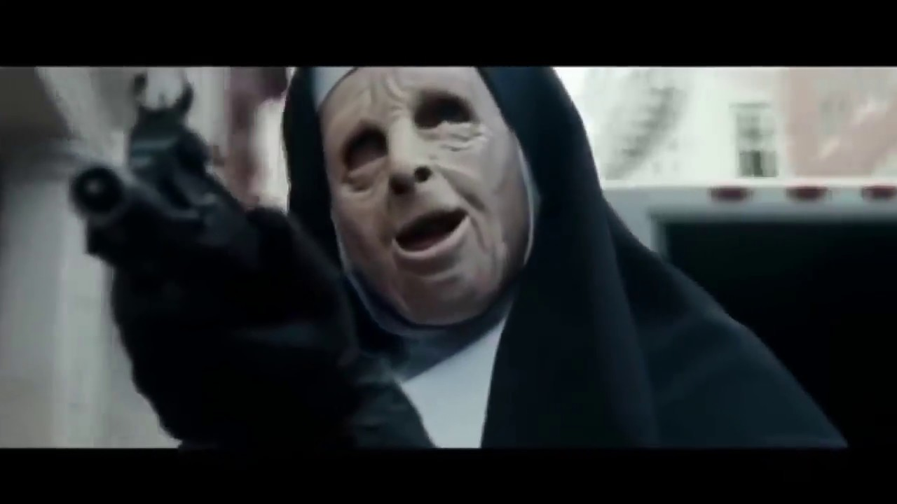
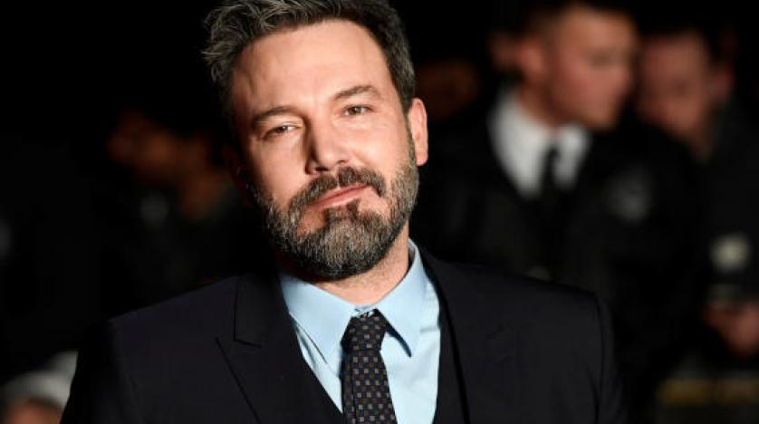

Boston’da Charlestown adlı bir bölge, nesiller boyu çok sayıda hırsızlıklara sahne olmakla ünlüdür. Bu işi yapanlar da kendi aralarında aile gibi olmuşlardır. Örneğin Dough MacRay özellikle banka soygunları yapan grubun başında lider konumundadır. Görevi gereği yaşamının hiçbir yerinde insanlarla yakınlaşmamıştır çünkü birini kaybetme duygusu işine engel teşkil edecektir. Ancak hayat bazen koşulları zorlar. Son hırsızlık görevi esnasında misyon gereği banka müdiresi Claire Keesey’i rehin almak zorunda kalır. Ne var ki bu kadına beklenmedik bir biçimde bazı hisler beslemeye başlaması hırsızlar liderini alabora edecektir.
Yönetmen

Benjamin Géza Affleck 15 Ağustos 1972 doğumlu, ABD'li oyuncu, yönetmen ve Oscar ödülü sahibi senarist. Ben, Berkeley Kaliforniya'da doğmuştur. Aktörlüğe çocukluktan başlayan Ben devlet kanalı olan PBS'in çesitli şovlarında rol almıştır. 1998 yılında Good Will Hunting filmi ile Matt Damon ile birlikte En İyi Özgün Senaryo Akademi Ödülü'nü ve En İyi Senaryo Akademi Ödülü'nü kazanmıştır. 2006 yapımı Hollywoodland filmi ile Venedik Film Festivali'nde En İyi Aktör ödülünü (Volpi Cup) almış ve Altın Küre'ye En İyi Yardımcı Aktör dalında aday gösterilmiştir. Son yıllarda sessiz kalan Ben sinemaya 2009 yılında "He is Just Not That into You" filmi ile geri donüş yapıp, eleştirmenlerden değişik yorumlar almıştır.
Ben Affleck
Baş Rol
Rebecca Hall, 19 mayıs 1982’de İngiltere’nin Başkenti Londra’da doğan sanatçı, bugüne kadar tam 23 filmde rol almıştır.The prestige filminde kısa bir rolü olmasına karşın, yeteneğiyle ve christian bale le arasındaki uyumla akılda kalan aktrist. vicky cristina barcelona filminde iyi bir oyun ortaya cikarmis guzel aktris.Sade ve duru güzelliği ile “Vicky Cristina Barcelona” adlı “Woody Allen” yapımı filmde aslında filmin asıl başrolünü oynamış gibidir. Filmin diğer oyuncuları onun hikayesi üzerine kurulmuş birer figür olarak göze çarpıyor. Zaten filmin hem başlangıç hem devamı hem de sonu onun hayatında neler yaptıkları ile alakalı olarak duruyor. gerçekten de Anne Hathaway’ ya da geçmişin Julia Ormond tarzı bir duruşu var. Sadeyken bile nasıl göz kamaştırılabileceğini bilen zarif bir bayan. Ayrıca 1982 doğumlu olması çok şaşırtıcı, orta yaş imajı veriyor perdede. ilk olarak “The Prestige” de (sarah borden) yine Scarlett Johansson ile rol arkadaşı olarak izlediğimiz bir oyuncu.
Rebecca Hall
Jon Hamm, 10 Mart 1971 tarihinde St. Louis, Missouri, ABD‘de doğmuştur. Tam adı Jonathan Daniel Hamm’dır. Babası Daniel Hamm, annesi Deborah Hamm’dır. 10 yaşında iken annesi öldü. 20 yaşında iken de babası öldü. Missouri’de John Burroughs Lisesinde okudu. Missouri Üniversitesi ve University of Texas at Austin‘de üniversite eğitimini tamamladı.
Jon Hamm